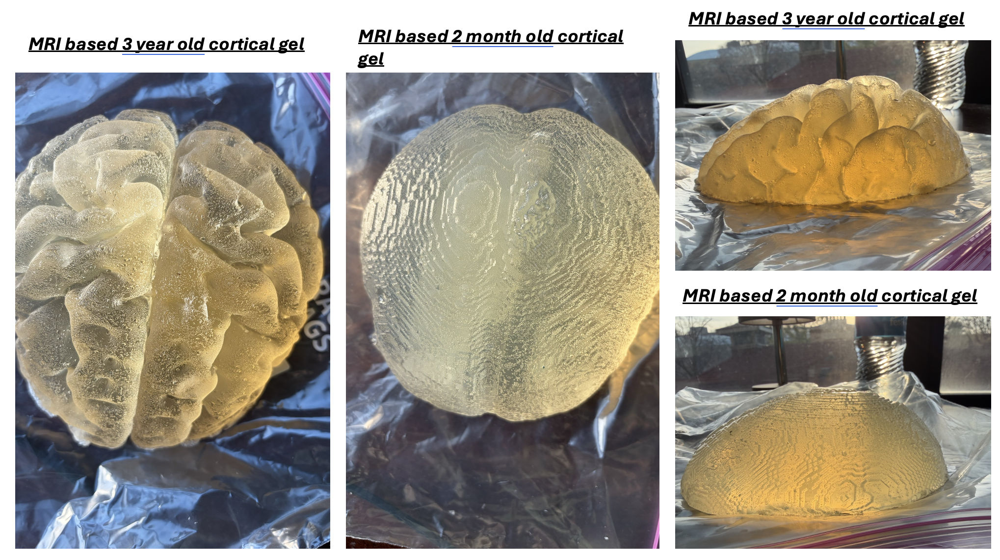

... (rest of the card) ...
...and REPLACE from `` through the card's content with the
block below. (The original was missing the closing
for the thumb,
the play/expand buttons, and used a URL that can't serve an image.)
NOTE: add your real thumbnail image to the repo and update the src path
below (shown as images/repro4sci_phantom.jpg).
════════════════════════════════════════════════════════════ -->
2026

Abstract
Methods for simulating advanced MR guided cortical brain gene therapy